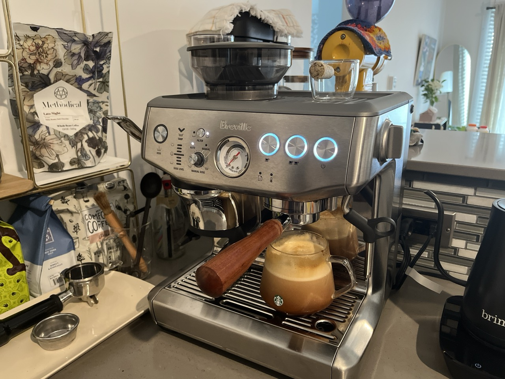
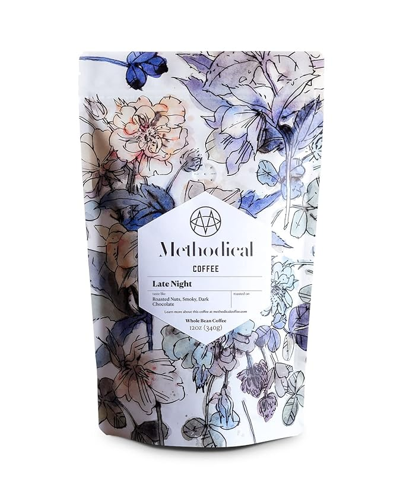
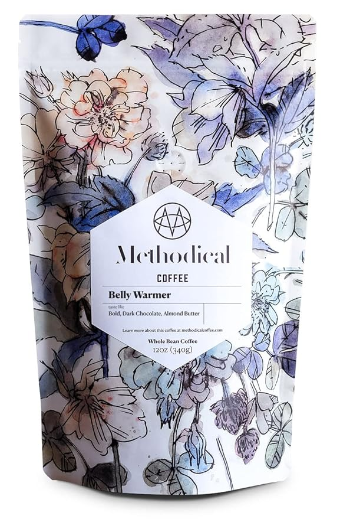
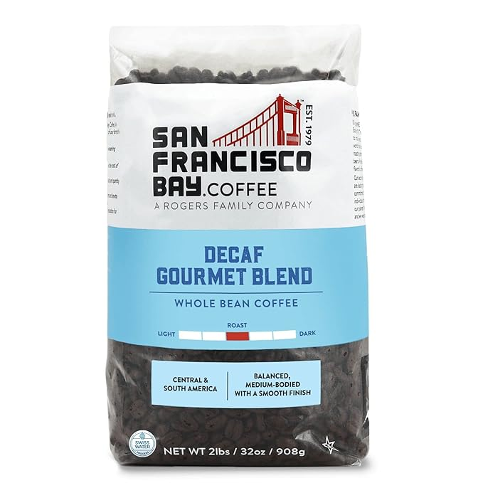

Welcome to Yuhan's Recommendations
My Coffee Machine
Hey friends! I just have to share my latest coffee obsession – the Breville Express Impress. This compact espresso machine has completely transformed my morning routine. It’s super easy to use, even if you’re new to making espresso at home. The Puck System handles the tricky parts like dosing and tamping, so every cup turns out perfect. Plus, with its built-in grinder with grind settings, I get the freshest coffee every time. Whether you're a coffee newbie or a seasoned barista, you'll love the rich, full-bodied flavors this machine creates. Trust me, it’s a total game-changer! Come over to my place and try some of my favorite coffee beans with this incredible machine. If you fall in love with it like I did, you can check it out on Amazon.
AmazonMy Go To Coffee Bean
This is another great product because...Bring Back Delicious Memories: Longing for a steaming mug of classic diner coffee? Late Night brings you that comforting coffee experience in premium Specialty Coffee packed with full-bodied flavor. Smooth Dark Roast Coffee with Bold, Chocolatey Notes, Freshly Roasted in the USA, Fair Trade Coffee Ethically Sourced from Family Farms
AmazonBelly Warmer
Belly Warmer Whole Bean Coffee: 100% Arabica Smooth Dark Roast Coffee with Bold, Chocolatey Notes, Freshly Roasted in the USA, Fair Trade Coffee Ethically Sourced from Family Farms, 12 Oz.
AmazonDecaf Whole Bean
Decaf Gourmet Blend Whole Bean, 2 lb Bag Beans from Central and South America, this medium roast results in a lively, well-rounded and smooth coffee. Tasting Notes: Balanced, Medium-Bodied with a Smooth Finish.
Amazon